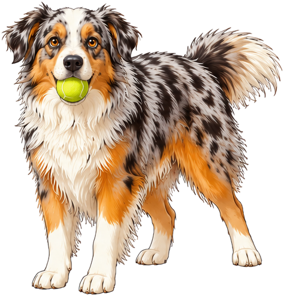

Spielzeit
Warum Hunde Bälle so lieben.
Grund 1
Hetzen, fangen, bringen: Jagdtrieb.
Grund 2
Spielen baut Stress ab – und verbindet.
Sicherheits-Tipp
Ball nie zu klein wählen.
Mein Ball!
warum sind hunde so verrückt nach bällen?
hetzen, fangen, bringen: jagdinstinkt
spielen baut stress ab
und stärkt eure bindung
tipp: nie zu klein – sonst verschluckt er ihn
Folgen für mehr Hundewissen

HundeWissenTv
